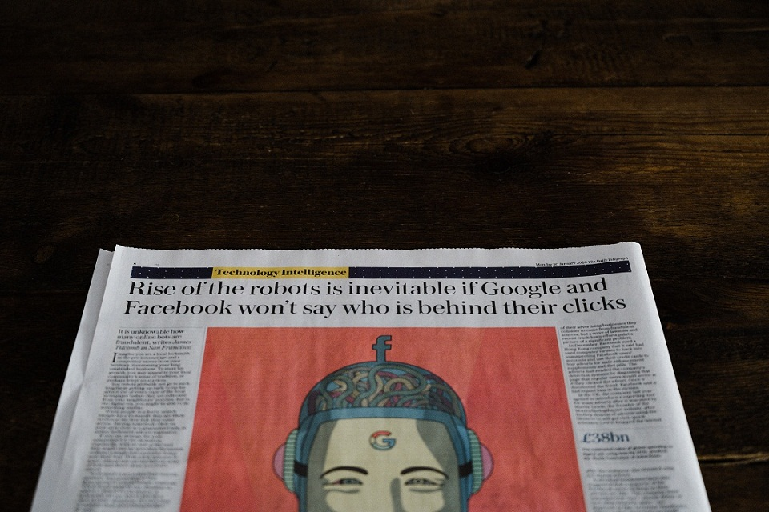
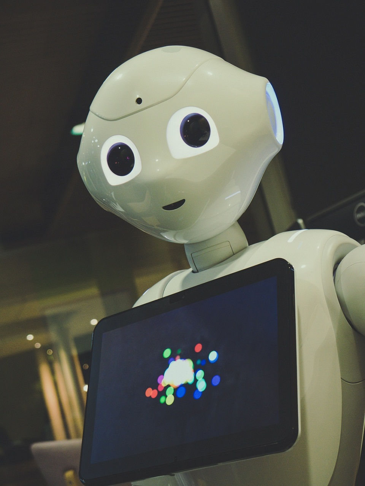

-
Will Robots ever take over the world?
Could they develop a mind of their own?Photo credit: Annie Spratt, Unsplash.
Metropolis (1927), Westworld (1973), Blade Runner (1982), The Terminator (1984), Wall-E (2008) and many more. For a long time now, we’ve been scared of robots taking over the earth. We put these fears to expression (in movies, articles and much more). We even gave the event a name. We called it the ‘technological singularity’.
“They’ll develop a mind of their own and enslave us”
“They’ll take over all we do and we’ll be helpless”
We’ve taken a lot of these in that sometimes we don’t know what to believe.
- Is it just a conspiracy theory? Could it ever really happen? Why do scientists keep making these things and don’t seem to be concerned?Photo credit: Owen Beard, Unsplash.
If I am to answer these questions, I’ll have to begin from defining what a robot is.
A robot is a machine built to carry out some complex task or group of tasks by physically moving, especially one which can be programmed. If we ever refer to a person as a robot, we mean that the person does not seem to have any emotions. Does that make robots dangerous? Maybe and maybe not.
Scientists predict that in 2030, robots would have taken over so many jobs but that doesn’t mean they’re taking over the world and we’re their slaves. It means they work for us. They serve us.
Robots are programmed to perform specific task(s). Some have access to a lot of information or data which they can process. They use the information to improve and work efficiently. What happens when they realize being called a robot is not cool? Or when they realize they are just our servants and we don’t care for them? Some people believe they will revolt and will fight us. What do I believe?Photo credit: Piotr Bene, Unsplash.
Quick reminder: Robots don’t feel emotions.
Think of whatever reason that robots will ever want to take over earth for that doesn’t involve emotions. The thought of being abused involves emotions (action to this is inspired by frustration or anger); the thought that they’re being enslaved means nothing until emotions are involved; the thought that they are more powerful and can enslave us involves emotion.
- What then happens if robots can feel emotions and they eventually revolt?
Worry not! In the history of man, no army (whether of fellow humans, animals or even diseases) have taken over the world. What makes the robots different? They wear out, they’re machine and they’re destructible. Therefore if robots can even rise up to fight us, we will survive eventually.
- Will robots ever take over the world?
No, robots will never take over the world. They can’t emotionally respond to the information they have access to therefore they can’t go violent except they are programmed to. Even if they can, we’ll destroy them eventually, we’ll survive.